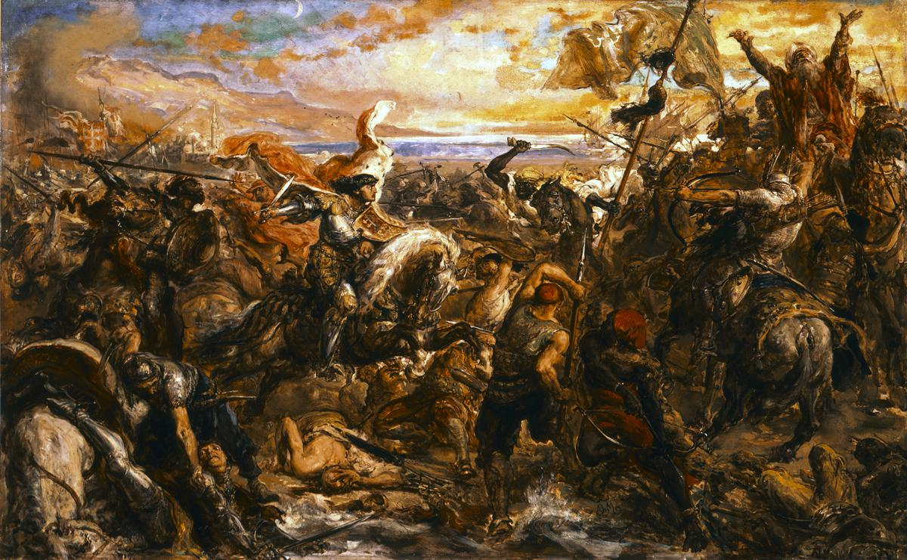

Gallery
The Battle of Varna

The Battle of Varna is an oil painting by Jan Matejko created in 1879. Soldiers on horseback wielded swords, spears, and other weapons, engaging in fierce combat, their expressions etched with determination and courage. Ottoman soldiers, distinguished by their turbans and attire, clashed with Polish warriors in traditional armor.